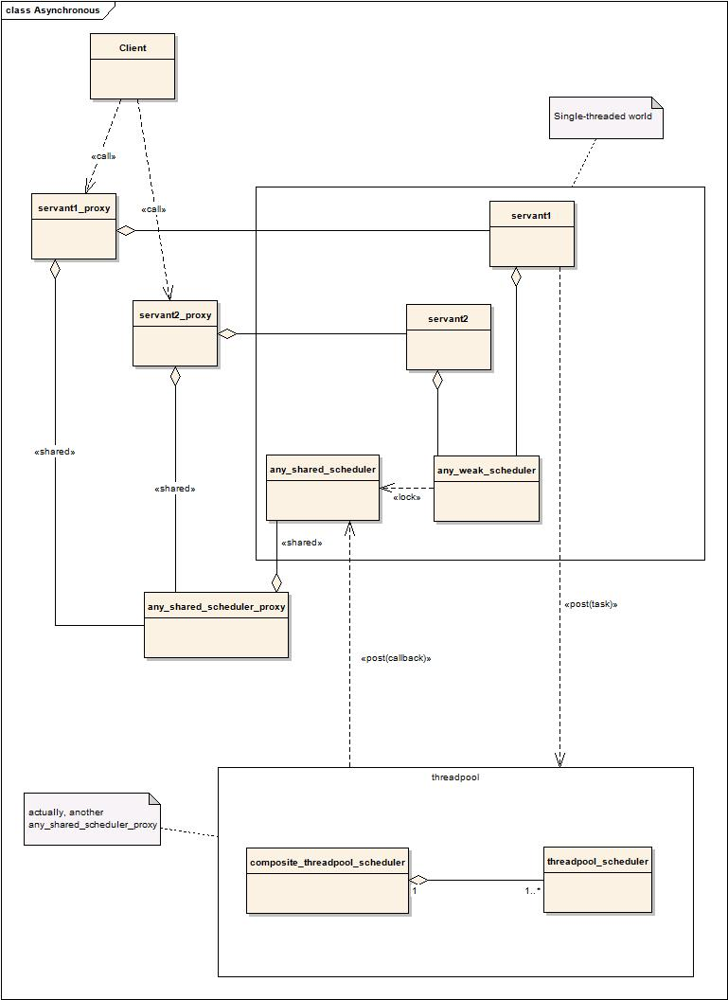

This diagram shows an overview of the design behind Asynchronous. One or more Servant objects live in a single-theaded world, communicating with the outside world only through one or several queues, from which the single-threaded scheduler pops tasks. Tasks are pushed by calling a member on a proxy object.
Like an Active Object, a client uses a proxy (a shared object type), which offers the same members as the real servant, with the same parameters, the only difference being the return type, a boost::future<R>, with R being the return type of the servant's member. All calls to a servant from the client side are posted, which includes the servant constructor and destructor. When the last instance of a servant is destroyed, be it used inside the Active Component or outside, the servant destructor is posted.
any_shared_scheduler is the part of the Active Object scheduler living inside the Active Component. Servants do not hold it directly but hold an any_weak_scheduler instead. The library will use it to create a posted callback when a task executing in a worker threadpool is completed.
Shutting down an Active Component is done automatically by not needing it. It happens in the following order:
While a servant proxy is alive, no shutdown
When the last servant proxy goes out of scope, the servant destructor is posted.
if jobs from servants are running in a threadpool, they get a chance to stop earlier by running into an interruption point or will not even start.
threadpool(s) is (are) shut down.
The Active Component scheduler is stopped and its thread terminates.
The last instance of any_shared_scheduler_proxy goes out of scope with the last servant proxy and joins.
It is usually accepted that threads are orthogonal to an OO design and therefore are hard to manage as they don't belong to an object. Asynchronous comes close to this: threads are not directly used, but instead owned by a scheduler, in which one creates objects and tasks.